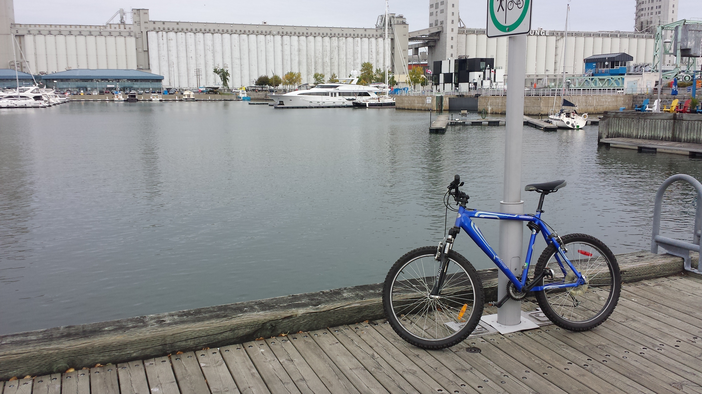
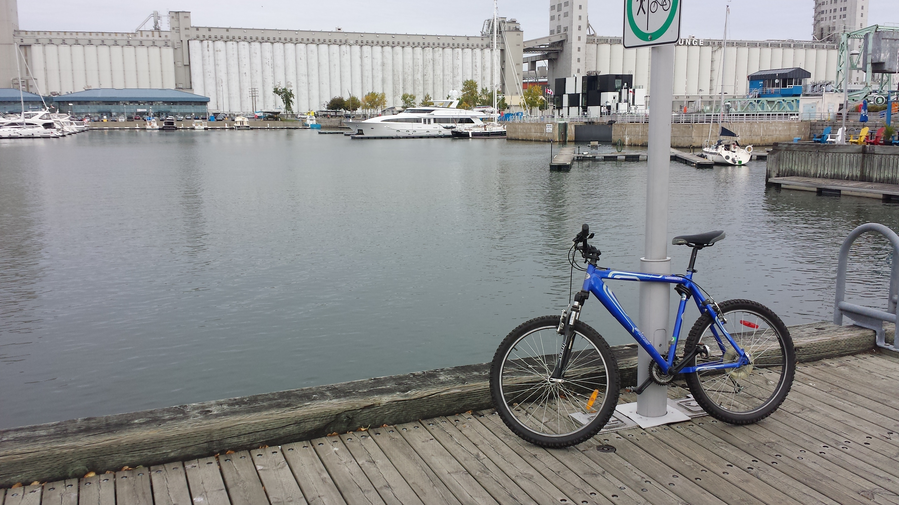

Porque me gusta andar en Bicicleta?
El Amor a practicar una actividad como andar en Bicicleta se origina por diferentes motivos y circunstancias,
su origen puede remontarse a una etapa de la vida que en la mayoria de los casos se asocia a un juego, pues para la mayoria
de los que practicamos el ciclismo como una actividad recreativa,
comenzamos con nuestra 1ra bicicleta durante la etapa de la
niñez o la adolecencia;Es por eso que para los que seguimos practicando el ciclismo durante una etapa de adulto nos resulta muy gratificante, ya que no solo
se trata de una actividad comun y corriente si no que nos trae buenos recuerdos que ocurrieron hace muchos años en los que el uso de una
bicicleta reperentaba juego y diversión
Costo aproximado de equipo basico para comenzar a practicar cilismo
| Bicicleta básica | 5,000.00 |
| Casco adulto | 1,000.00 |
| lentes sol | 350.00 |
| Guantes adulto | 350.00 |
| total | 6,700.00 |
|---|
 
 
En el mundo del ciclismo la describirian como una "Hardtail" de 27.5" de rodado, equipada con suspensión delantera y un conjunto de 18 cambios en 3*6
Dudas de como empezar a practicar ciclismo? aqui te ayudamos..